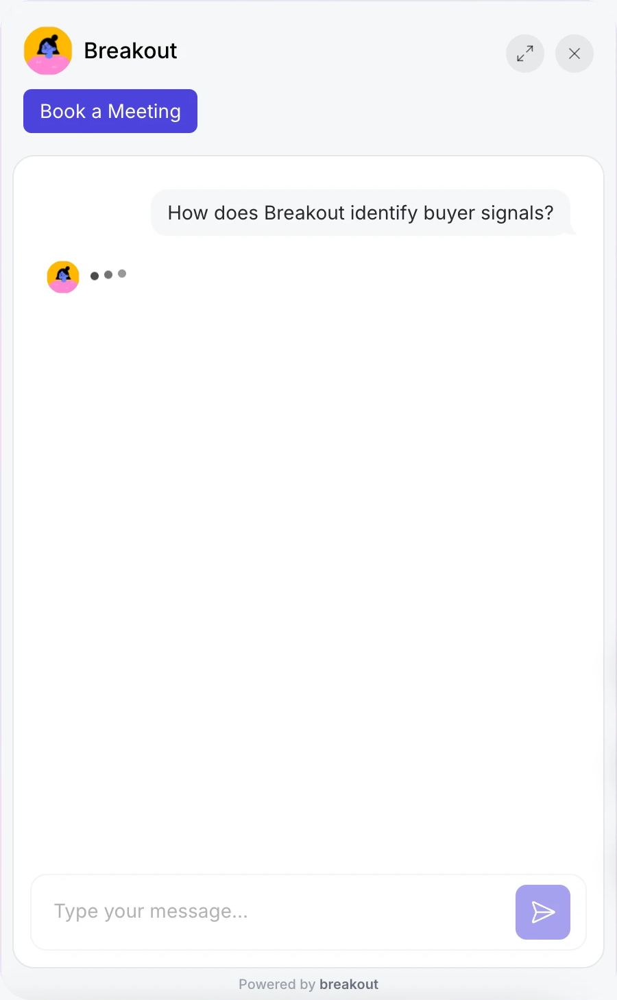

Memphis, Tennessee · 1916
Until 1916, a clerk
fetched everything.
You asked. They knew your name. They brought it to the counter.
Style frame 1 · hook · the fact
September 6, 1916
Then a store in Memphis said
help yourself.
Open shelves. Baskets. Nobody asking.
Style frame 2 · hook · the turn
A century later, the web is the biggest
self-service store ever built.
Contact sales
Name
Work email
Company size
Submit
Nobody greets you. You fill in a form.
Style frame 3 · the world now
The clerk
The clerk
The clerk
is back.

Style frame 4 · the cut into Breakout

Greets every visitor
like it already knows them.
Identifies
Answers
Books the meeting
Style frame 5 · the product, analog
Pageview to pipeline.
Pageview to pipeline.
getbreakout.ai
Style frame 6 · the end
Kansas City · 1889
The story goes: the operator kept
routing an undertaker's calls
to his rival.
So Almon Strowger invented the automatic exchange. Patent 447,918, 1891.
Style frame 7 · alternative hook · the operator
1 PAGE + 9 IMAGES = 10 HITS
We counted files.
Then pageviews.
Analysts said HITS stood for "How Idiots Track Success."
Style frame 8 · alternative hook · hits